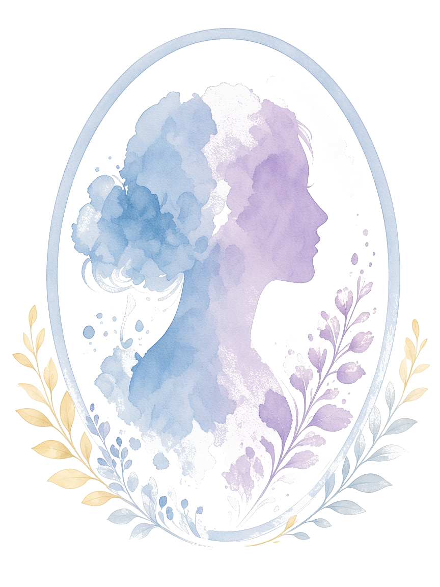

關於我
以溫柔與專業，陪伴您在情緒與成長的路上前行。
吳綺敏女士（Pil Y. M. Ng）｜註冊輔導心理學家
吳小姐是一名香港輔導心理學家，致力於心理輔導工作，曾提供治療小組及心理輔導予戒賭人士、夫妻、父母及有特殊教育需要 (SEN) 的學生，曾處理人際關係、成癮、學業及工作壓力、情緒困擾及家庭衝突等問題。
在輔導中，我主要採用心理動力學治療、以人為本治療及認知行為治療，希望與案主一同找尋個人的優勢和潛能，以渡過生命中的每個挑戰與難題，達至身心靈的健康。若您現正經歷苦惱或挫折，或希望重新認識自己，我會為您訂立符合個人需要的治療或目標，一同面對及解決每個挑戰與難題。
- 學歷 香港樹仁大學社會科學碩士（輔導心理學）
- 專業註冊 香港心理學會註冊輔導心理學家
- 專業認證（節錄） PREPARE/ENRICH 評估執行協談員；LEGO® Six Bricks／DUPLO® Play Box／Brick-By-Brick® 認證引導師；PACT®「親‧子‧遊」社交溝通親子訓練導師
- 教學經驗 香港專業進修學院兼職講師；香港理工大學助教
- 專長 個人心理輔導／治療、戒賭輔導、家庭輔導／治療、遊戲治療、心理小組治療、心理專題講座／工作坊
著作／出版
- 《教養萬年曆：心理學家365天伴你輕鬆育兒》（2025）— 十二位輔導心理學家；部分篇章由吳綺敏撰寫
- 《低谷自救心理學》（2026）— 六位輔導心理學家；部分篇章由吳綺敏撰寫
- 《兒童小題大解答：50 個社交疑難解答之書》（2026）— 九位輔導心理學家